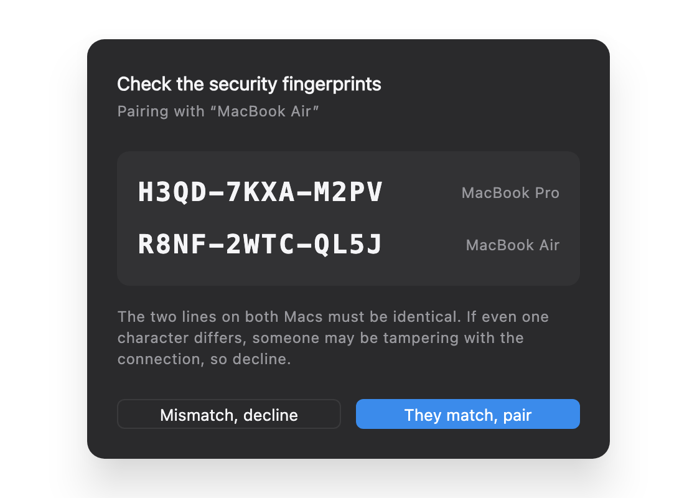
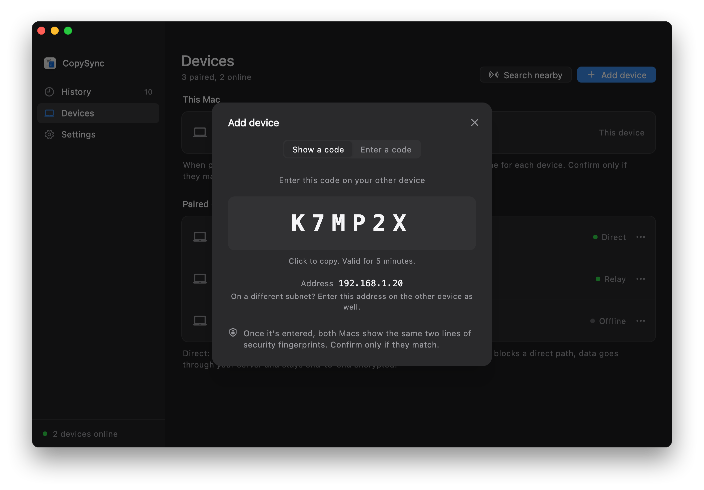
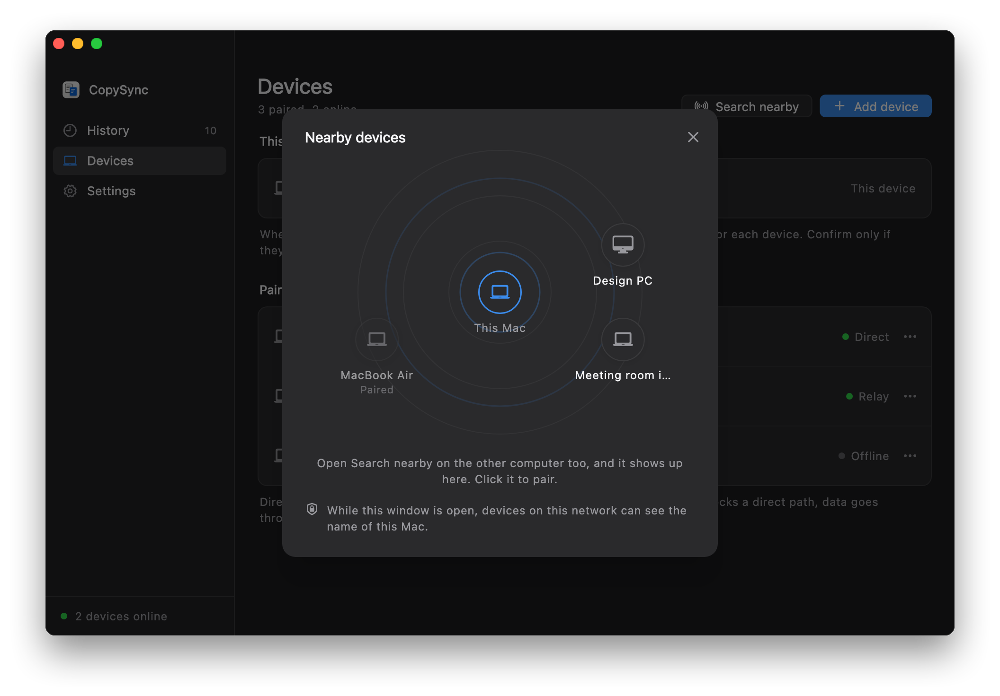
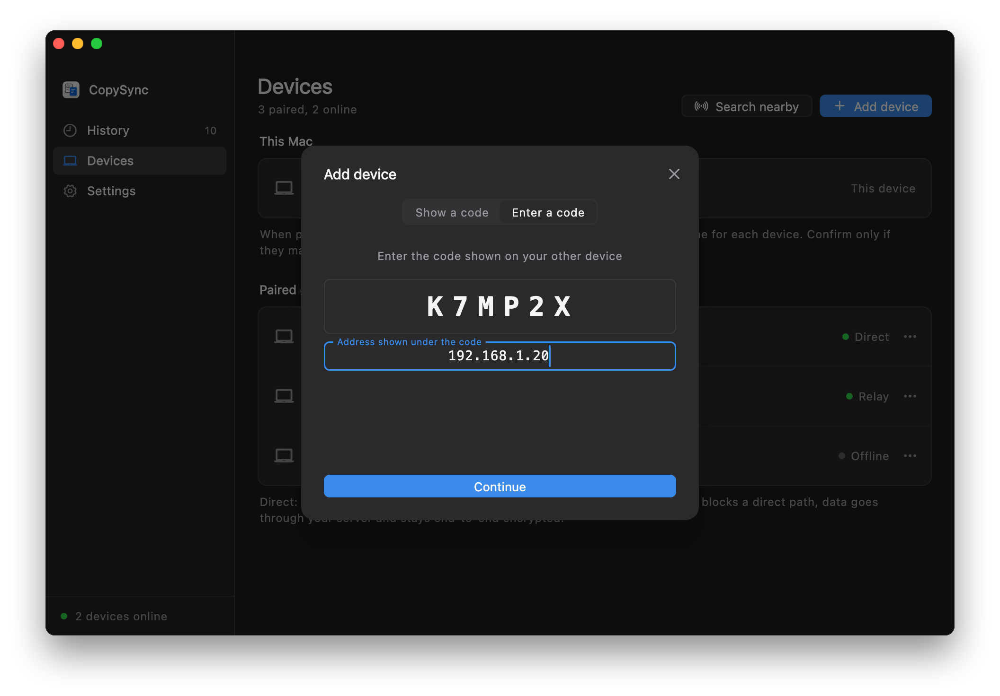

On the same network
Computers behind the same router don't need a server. Install the app, enter a pairing code, and copying syncs from then on.
No server
Two computers on the same network find each other over mDNS, exchange connection details directly, and open an encrypted direct connection. No server, and no computer that has to stay on.
- Found automatically. Each computer announces itself on the LAN over mDNS, with only an anonymous token that changes daily, so nobody can tell whose computer it is. Its name is added only while Search nearby is open.
- Direct. Content goes straight between the two computers, at the speed of your network.
- Same security. You compare two fingerprint lines when pairing, and every message after that is signed, so others on the network can't pose as your device.
Before you start
- The same network
- Both computers behind the same router; Wi‑Fi and wired can mix. Guest networks and Wi‑Fi with client isolation keep devices apart, and in many offices wired and Wi‑Fi are separate subnets: see different subnets below.
- Windows Firewall
- On first run, Windows asks whether PasteFerry may get through the firewall; allow it. If you clicked Cancel, click Allow under Settings → Local network in PasteFerry, which asks for administrator approval once.
- Local Network on macOS
- From macOS 15, the first time it reaches a device on your network, macOS asks whether PasteFerry Daemon may find devices on your local network; allow it. If you declined, turn it on in System Settings → Privacy & Security → Local Network.
- No server address
- Leave the server field in Settings empty. To sync across networks later, add a server or use Tailscale; paired devices stay paired.
Step 1
Pair your computers
Pair each two computers once. If the app isn't installed yet, see the quick start.
- On one computer, open Devices and click Add device. It shows a 6-character code, valid for 5 minutes.
- On the other, click Add device too, switch to Enter a code, type it in and click Continue.
- Both screens show the same two fingerprint lines. Check them character by character, then confirm. Copying syncs from now on.


Without a code: Search nearby
- On both computers, open Devices and click Search nearby. Only while this window is open can devices on the network see this computer's name.
- When the other one shows up on the radar, click it. Both screens show the same two fingerprint lines; check them, then confirm on each.
- This works within one subnet only. If the other computer doesn't show up, use a pairing code as above.

Step 2
Different subnets
Local discovery only reaches one subnet. When your computers are on different subnets that can still reach each other, as in many offices, you enter one address when pairing.
- The computer showing the code lists its address below it, such as
192.168.1.20. - On the computer entering the code, click On a different subnet?, enter that address, and click Continue.
- After pairing, each computer remembers the other's address. If one changes address, the other finds it again on its own; if both change, open the device's … menu under Devices and choose Enter its address.

If the subnets can't reach each other at all, such as a guest network kept apart from the office network, traffic has to go through a computer both can reach: see run a server on your LAN.
Questions
The other computer can't be found
Make sure both are on the network with background sync on. Then try entering the other computer's address on the one entering the code: if that works, they're on different subnets, or the network blocks mDNS.
Still nothing? Check the other computer's firewall. On Windows, click Allow under Settings → Local network; on a Mac, make sure PasteFerry Daemon is on under System Settings → Privacy & Security → Local Network and the macOS firewall isn't blocking it.
Does it sync away from this network?
No. It resumes when you're back, and anything copied in between is added to the other computer's history. To sync across networks, add a public server or use Tailscale; paired devices stay paired.
What if an address changes?
Usually nothing to do. On one subnet, mDNS finds the computer again at any time; across subnets, it reconnects as long as one of the two keeps its address. If both change, enter the address once more under Devices.
For a desktop that never moves, you can reserve its address in your router's DHCP settings.
Can others on the network see my computer?
They can see that a PasteFerry device is there, but not whose: the broadcast carries an anonymous token that changes daily, with no device name or ID. The name is added only while you have Search nearby open, and removed when you close it. Messages from devices you haven't paired with are dropped, and pairing requires comparing fingerprints on both screens.
Which ports does it use?
UDP 8788 for connection details (a random port if that's taken), UDP 5353 for mDNS, and another random UDP port for the data once connected. Nothing to configure on your router.
One network,
nothing to set up.
Version 2.2.0, free and open source. macOS 13 or later; Windows 10 and 11; Linux (x64 and ARM64).
Design notes on local network mode (in Chinese)